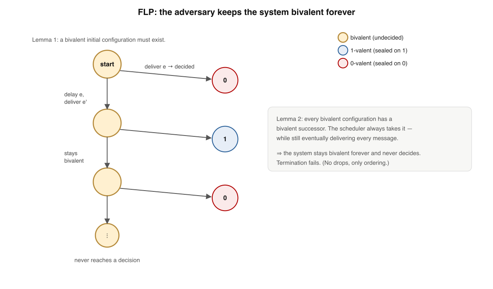
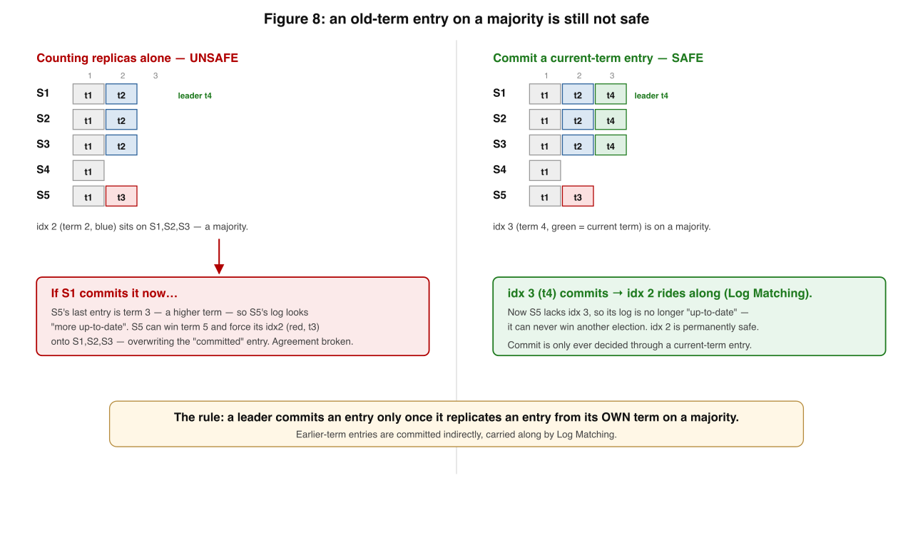
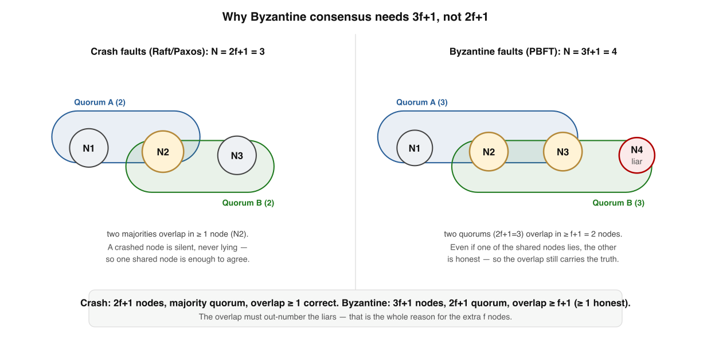

Deep Dive · supplement to Book 1, Lesson 8 · visual edition
Consensus — the floor beneath FLP, Raft & BFT
~30 min · 6 levels · the proofs & the safety bug you'd otherwise ship · interactive recall
Your bar: from a blank page, redraw why FLP is true (bivalence), exactly what
makes Raft safe (the election restriction), the one commitment rule everyone states wrong (Figure 8), and
why lying nodes force 3f+1. Five sentences from Lesson 8 each hide a subtlety that separates
"I read the Raft paper"3 from "I could implement it without a safety bug."
One sentence holds the whole supplement. Each level unpacks one chip of it:
Async consensus can't be guaranteed (FLP)so real protocols buy liveness with partial synchronyRaft moves safety into the electionand lying nodes raise the wall to 3f+1
Memorise this banner. Every level below either proves why termination must yield, or shows how a real protocol keeps the two safety properties anyway.
1
FLP, actually proved — the bivalence argument
"An adversary delays the deciding message forever" is the shape. The real proof says precisely where the impossibility lives.

The bivalence argument. Configurations are 0-valent, 1-valent, or bivalent. A bivalent start exists; from any bivalent configuration the adversary can always step to another bivalent one, so it never reaches a decision.
Model the system as a configuration = every node's state + every in-flight message. Its valence is which decisions are still reachable:
The proof is two lemmas: a bivalent start exists, and from any bivalent config the adversary can stay bivalent forever.
Lemma 1 — a bivalent start exists Order all initial input vectors so neighbours differ in one node's input. All-0 is 0-valent, all-1 is 1-valent; somewhere two neighbours flip valence. Crash that one differing node and the runs are indistinguishable → must decide alike → one neighbour is bivalent.
Lemma 2 — bivalence is inescapable From a bivalent config, delivering a pending message e can always be arranged to land in another bivalent one. A "critical step" where e vs e' forces opposite valences can't exist: they either commute (different nodes) or one node can crash right after (same node) — indistinguishable.
✗ "FLP says consensus is impossible in practice"
✓ It says no deterministic protocol can guarantee termination in a purely asynchronous model
The dagger: the adversary may not drop messages or crash more than one node — it only chooses message order, and every message is still eventually delivered. Impossibility comes from asynchrony alone. Relax any one assumption and consensus is solvable:
Every real protocol below takes the partial-synchrony escape: keep safety always, get liveness once the network calms down.2
🔒 Memory rule: FLP kills guaranteed termination in pure async with one crash — order alone is enough; real systems trade liveness for partial synchrony and never give up safety.
Memory check
What is a "configuration"? → all node states + all in-flight messages
Which property does FLP make impossible to guarantee? → termination (safety always holds)
The adversary's only power? → choosing message order; it can't drop or extra-crash
2
Raft is safe via five properties — one is subtle
Raft (Ongaro & Ousterhout, 2014)3 guarantees correctness through five always-true invariants. Four are mechanical; one carries the whole proof.
#
Property
Plain meaning
1
Election Safety
at most one leader per term
2
Leader Append-Only
a leader never overwrites/deletes its own log, only appends
3
Log Matching
same index and term in two logs ⇒ all prior entries identical
4
Leader Completeness
a committed entry is present in the log of every later-term leader
5
State Machine Safety
no two servers apply a different command at the same index
Leader Completeness (4) is the one that makes the whole thing work — and it's not obvious. A brand-new leader is never told what was committed, so why must it already hold every committed entry? The answer is the election restriction + the quorum-overlap trick:
On RequestVote, a follower refuses unless the candidate's log is at least as up-to-date (compare last-entry term, then index). A candidate missing a committed entry can never assemble a majority.
✗ "The previous leader hands its log to the new one"
✓ Nobody hands anything over — the up-to-date check at vote time guarantees it
🗳️ Memory rule: Raft moves the hard safety work into the election, not the replication — the up-to-date vote check is what makes a leader complete.
Memory check
Which property does the real work? → Leader Completeness (#4)
What enforces it? → the election restriction + majority overlap
"Up-to-date" compares what, in order? → last-entry term, then index
3
The commitment gotcha — Raft's Figure 8
The single most important subtlety in Raft, and the rule almost everyone states wrong on a first reading.
✗ "An entry is committed once stored on a majority of nodes"
✓ True only for a current-term entry; a previous-term entry on a majority can still be overwritten

The Figure-8 commitment trap. An entry from an old term, replicated to a majority, can still be overwritten by a later leader. A leader must only count an entry committed once it has replicated an entry from its own term on a majority.
Walk the canonical five-node scenario (S1–S5). At step (c) the old entry is on a majority — and committing it there is the disaster:
Step
What happens
Danger
(a)
S1 is leader in term 2, replicates idx2(t2) to S1,S2
—
(b)
S1 crashes. S5 wins term 3 (S3,S4,S5 — short logs pass the check), accepts a differentidx2(t3) on S5 only
—
(c)
S5 crashes. S1 restarts, wins term 4, re-replicates old idx2(t2) to S1,S2,S3 — now a majority
⚠ tempting to call it committed
(d)
If it did: S1 crashes, S5 wins term 5 (S5's idx2(t3) is a higher term → "more up-to-date"), forces idx2(t3) onto everyone
✗ overwrites a "committed" entry — agreement violated
📌 The fix (one sentence in the paper): A leader counts an entry committed only once it has stored an entry from its own current term on a majority; earlier-term entries are then committed indirectly, carried by Log Matching.
So at (c), S1 must not commit idx2(t2) by replica count. It waits to replicate a fresh idx3(t4) on a majority — the instant that commits, S5 (lacking idx3) can never win again, so idx2 is safe too. Commitment is only ever decided through a current-term entry; the past rides along. Miss this and you ship an implementation that loses committed data under one specific crash interleaving — and it passes every test that doesn't reproduce exactly that order.
Memory check
When is replica-count commitment safe? → only for a current-term entry
How do old-term entries get committed? → indirectly, once a current-term entry above them commits
Why won't normal tests catch the bug? → it needs one exact crash interleaving
4
Membership change without splitting in two
Cluster membership isn't fixed. Switch nodes from C_old to C_new at slightly different moments and each set can form a majority independently — two leaders, divergence. Changing membership is itself a consensus problem.
The cluster transitions through an intermediate C_old,new where elections and commits each need a majority of both sets, separately and simultaneously.
✗ "Just point every node at the new config and restart"
✓ A naive cutover breaks Election Safety; you need joint (overlapping) consensus
🔀 Memory rule: Joint consensus forces every decision to clear a majority of both old and new sets at once, so two independent majorities can never coexist. (Single-server-at-a-time changes came later; joint consensus is the idea to hold.)
Memory check
Why is a naive membership switch dangerous? → C_old and C_new can each form a majority
What does C_old,new require for any decision? → a majority of both sets, simultaneously
The two-step sequence? → commit C_old,new, then commit C_new
5
The landscape — you don't have to use Raft
Raft is one point in a space dominated for decades by Paxos. Same safety; different trade-offs.
All provide the same safety. Raft & Multi-Paxos are crash-fault-tolerant (CFT): they assume nodes fail by stopping, not by lying — which is the last, biggest step.
Protocol
Idea
Trade-off
Paxos (single-decree)
agree on one value via prepare/promise then accept/accepted, around a quorum
proven minimal; famously hard to understand & productionise
Multi-Paxos
a stable leader runs a sequence of Paxos instances — a replicated log
the practical form; what most "Paxos" systems mean
Raft
same guarantees, redesigned for understandability: strong leader, terms, election restriction
easier to get right; strong-leader bottleneck caps throughput
EPaxos / leaderless
no fixed leader; exploit that commuting commands need no agreed order
lower latency, no leader hotspot, at real complexity cost
🗺️ Memory rule: Paxos → Multi-Paxos → Raft are the same CFT family; EPaxos drops the leader. Pick by who you trust to bottleneck (the leader) vs how much complexity you'll pay.
Memory check
Multi-Paxos in one line? → a stable leader running a sequence of Paxos = a replicated log
Raft's main cost? → strong-leader throughput ceiling
What do CFT protocols assume about failures? → nodes stop, never lie
6
When nodes lie — Byzantine consensus & the 3f+1 wall
Drop the crash-fault assumption. A Byzantine node (Lamport, Shostak & Pease, 1982)5 can do anything — send conflicting messages, forge values, collude. The model for systems crossing trust boundaries: blockchains, compromised participants.

Crash vs Byzantine quorums. Tolerating f crashes needs 2f+1 nodes; tolerating f liars needs 3f+1, because quorums must overlap in enough nodes to guarantee at least one honest one in common.Under crash faults a one-node overlap suffices — that node is trustworthy. Under Byzantine faults the shared node might be the liar, so the overlap must contain more honest than faulty nodes → 2f+1 quorums out of 3f+1, intersecting in f+1.
Fault model
Nodes
Quorum
Why
Crash (CFT — Raft, Paxos)
2f + 1
f + 1
any two majorities overlap in ≥ 1 node, which is correct (didn't lie)
Byzantine (BFT — PBFT)
3f + 1
2f + 1
any two quorums overlap in ≥ f + 1 nodes, so ≥ 1 of the overlap is honest
✗ "BFT is the safer choice, use it everywhere"
✓ Inside one datacenter, crash faults are the honest model — 2f+1 Raft is right; reach for 3f+1 only across trust boundaries
🛡️ Memory rule: Crash needs a quorum overlap of one trustworthy node; Byzantine needs the overlap to out-number the liars → 2f+1 of 3f+1, intersecting in f+1 with ≥ 1 honest.
PBFT (Castro & Liskov, 1999)5 made this practical with three phases (pre-prepare, prepare, commit). Nakamoto/Bitcoin reaches probabilistic Byzantine agreement via proof-of-work instead of fixed quorums; Tendermint and HotStuff are PBFT descendants.
Memory check
Why 3f+1 not 2f+1? → overlap must contain an honest node even if the liar is in it
Byzantine quorum size? → 2f+1, intersecting in f+1
PBFT's three phases? → pre-prepare, prepare, commit
Where each idea shows up — real systems
Grounding for the theory: the concept, a concrete place it bites, and the lesson it teaches.
Concept
Real system
What it teaches
FLP / partial synchrony
Any Raft/Paxos cluster wedging during a network blip, then recovering
safety holds; liveness waits for the network to calm
Election restriction
etcd / Consul leader elections refusing stale candidates
committed history can't be lost across a leader change
Figure-8 commitment
The classic Raft implementation bug: committing prior-term entries by replica count
crossing trust boundaries triples the honest-overlap requirement
Pattern to notice: inside one company's datacenter, 2f+1 crash-fault tolerance is almost always the right model. The 3f+1 machinery is for when participants genuinely can't trust each other.
Q1. FLP proves consensus can't be guaranteed specifically when the system is…
Q2. Which consensus property does FLP make impossible to guarantee?
Q3. A brand-new Raft leader is guaranteed to hold every committed entry because…
Q4. A Raft leader may treat an entry as committed only once it has…
Q5. Joint consensus prevents split-brain during membership change by…
Q6. Byzantine consensus needs 3f+1 rather than 2f+1 because…
Reconstruct the deep dive from a blank page
Write the six levels in order, one line each, with nothing on screen. Then reveal and compare — gaps are your next drill.
1 FLP: bivalence — order alone kills guaranteed termination; partial synchrony is the escape ·
2 Raft safety lives in the election: up-to-date check + majority overlap ⇒ Leader Completeness ·
3 Figure 8: commit by replica count only for current-term entries; old ones ride along ·
4 Membership: joint consensus needs a majority of both sets ⇒ no split brain ·
5 Landscape: Paxos→Multi-Paxos→Raft (CFT); EPaxos drops the leader ·
6 Byzantine: liars force 3f+1, quorum 2f+1, overlap f+1 with ≥1 honest.
I'm your teacher — ask me anything. Say "grill me on consensus" for mixed no-clue
questions, or hand me a real system and I'll place it on CFT↔BFT and leader↔leaderless with you. Want to
whiteboard a Raft commit walkthrough or the Figure-8 trace live? Just ask.
Interview questions on these concepts
Use each one twice: answer it yourself from memory (recall), and ask it of a candidate to test depth. Reveal shows what a strong answer hits — a checklist, not a script.
1 · State FLP precisely, then explain why the bivalence argument is sharper than "the adversary delays a message."
Hits: no deterministic protocol can guarantee termination in a purely asynchronous model tolerating one crash. Bivalence shows a bivalent start exists (Lemma 1) and is inescapable (Lemma 2) — the adversary only reorders messages, never drops them. Bonus: names the partial-synchrony escape (DLS 1988).
2 · A new Raft leader is never told what was committed. Why is it guaranteed to already have every committed entry?
Hits: the election restriction — a vote is granted only to an at-least-as-up-to-date candidate (last-entry term, then index). A committed entry is on a majority; a winner needs a majority; the two majorities overlap, so an overlapping voter holds the entry and won't vote for a candidate missing it. Red flag: "the old leader hands over its log."
3 · Walk me through Figure 8 and state the commitment rule that prevents it.
Hits: an old-term entry can sit on a majority and still be overwritten (S5 wins a later term with a higher last-term entry). Rule: a leader counts an entry committed only after replicating a current-term entry on a majority; earlier entries commit indirectly via Log Matching. Bonus: notes the bug passes tests that don't hit that exact interleaving.
4 · How does Raft change cluster membership without risking two leaders?
Hits: a naive cutover lets C_old and C_new each form a majority → split brain. Joint consensus routes through C_old,new, where every election and commit needs a majority of both sets simultaneously; sequence is commit C_old,new then commit C_new. Two disjoint majorities can never form. Bonus: single-server changes are the later simplification.
5 · Why does crash tolerance need 2f+1 but Byzantine tolerance need 3f+1?
Hits: quorum-overlap reasoning. Crash: two majorities of 2f+1 overlap in ≥1 node, which is trustworthy. Byzantine: the shared node could be the liar, so the overlap must contain more honest than faulty nodes → 2f+1 quorums out of 3f+1 intersect in f+1, of which ≥1 is honest. Bonus: PBFT three phases; Nakamoto is probabilistic.
6 · When would you choose Multi-Paxos, Raft, EPaxos, or PBFT — and when none of them?
Hits: all CFT options give the same safety; Raft for implementability, Multi-Paxos as the incumbent, EPaxos to kill the leader bottleneck for commuting commands at complexity cost. PBFT only across trust boundaries (3f+1). "None" if you don't actually need linearizable agreement — e.g. CRDTs / eventual consistency suffice.
7 · Your team's homegrown Raft loses a committed write under one rare crash sequence. What's your first hypothesis?
Hits: the Figure-8 commitment bug — committing a prior-term entry by replica count instead of waiting for a current-term entry to commit. Bonus: explains why it's interleaving-specific and how to write a test (or a TLA+/model-checked spec) that forces the exact order.
8 · Whiteboard: design the commit path for a replicated log that must never lose an acknowledged write. (rehearse this one with me)
Hits: majority replication before ack; commit only via a current-term entry; election restriction on votes; fsync before ack for durability; bounded leader leases / terms; idempotent client requests with dedup; membership changes via joint consensus. Want to run this live? Ask me to grade your whiteboard answer.
★ Cheat sheet — the numbers & the gotchas
Mental models: FLP = order alone defeats guaranteed termination · safety always, liveness waits · Raft safety lives in the election · commit only via a current-term entry · joint consensus for membership · CFT = 2f+1, BFT = 3f+1.
The numbers
Quantity
Value
Crash-fault nodes for f failures
2f + 1 (quorum f+1, overlap ≥1 correct)
Byzantine nodes for f liars
3f + 1 (quorum 2f+1, overlap f+1 ⊇ honest)
Consensus properties
Agreement · Validity · Termination
FLP casualty
Termination (in pure async, 1 crash, deterministic)
① "Majority = committed" is true only for current-term entries (Figure 8). ② A new leader is complete because of the vote-time up-to-date check, not a handover. ③ Naive membership cutover breaks Election Safety — use joint consensus. ④ Don't reach for BFT inside one datacenter; crash faults are the honest model.
📄 ← Learning Hub · ⬇ EPUBRead next ▸ Raft paper §5.4 (Leader Completeness & Figure 8)